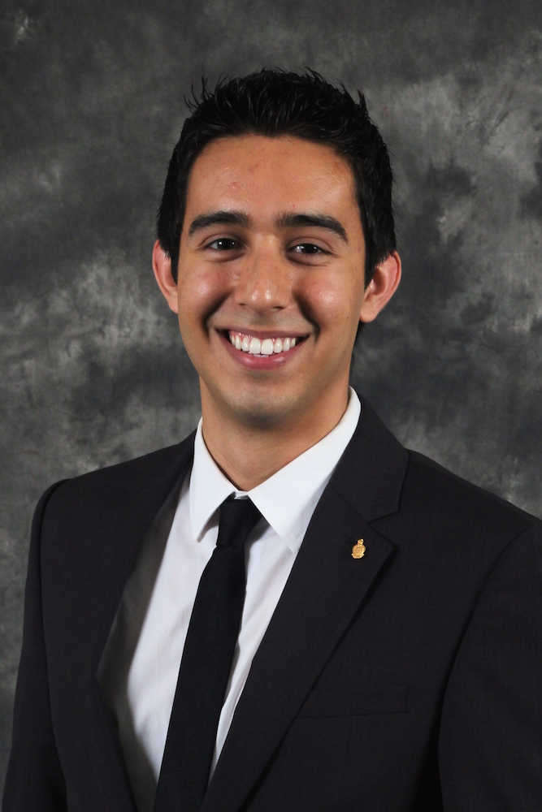

Hometown
Palmdale, CA
Positions Held At:
Mechanical Engineering Intern at Microsoft
Product Management Intern at Foxconn
PsomasFMG Solar Curriculum Developer
Revolution Prep SAT Branch Manager and Instructor
Casa Zapata Resident Assistant
Bio
Joshua Mendoza is a senior majoring in Product Design Engineering. He joined Alpha Kappa Psi in Spring 2014 as part of the Alpha Zeta class. He has held internships in product management, mechanical engineering, K-12 curriculum development, and corporate branch management. Joshua is passionate about graphic and interior design, film and digital photography, and food entertainment. He enjoys traveling, trying new foods, and studying Mandarin.